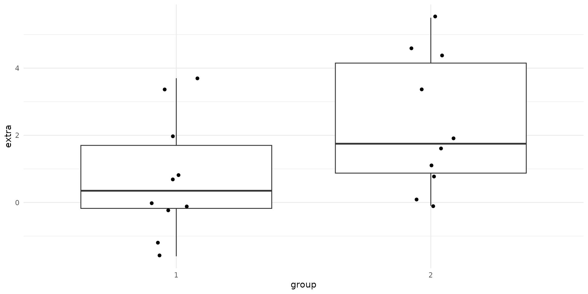
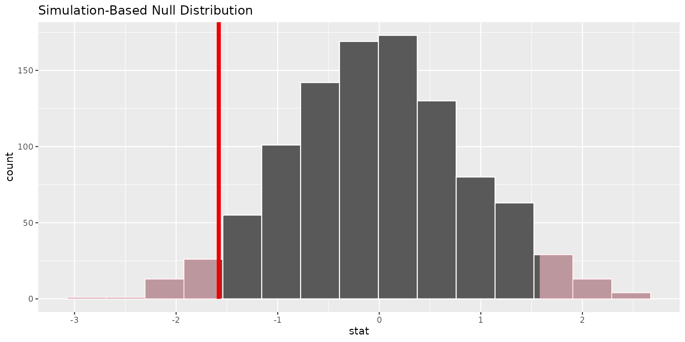

Rows: 20
Columns: 3
$ extra <dbl> 0.7, -1.6, -0.2, -1.2, -0.1, 3.4, 3.7, 0.8, 0.0, 2.0, 1.9, 0.8, …
$ group <fct> 1, 1, 1, 1, 1, 1, 1, 1, 1, 1, 2, 2, 2, 2, 2, 2, 2, 2, 2, 2
$ ID <fct> 1, 2, 3, 4, 5, 6, 7, 8, 9, 10, 1, 2, 3, 4, 5, 6, 7, 8, 9, 10ENVX1002 Statistics in Life and Environmental Sciences
The University of Sydney
Apr 2026
What if we didn’t assume a distribution at all?

Commit to an answer
# A tibble: 1 × 1
p_value
<dbl>
1 0.076
If the observed statistic is rare under “no effect” → evidence against null In this case it is not super rare, so we do not have strong evidence against the null hypothesis of no difference in sleep between the two groups.
Welch Two Sample t-test
data: extra by group
t = -1.8608, df = 17.776, p-value = 0.07939
alternative hypothesis: true difference in means between group 1 and group 2 is not equal to 0
95 percent confidence interval:
-3.3654832 0.2054832
sample estimates:
mean in group 1 mean in group 2
0.75 2.33 infer provides a clean workflowsimulate → compare → conclude
We are not memorising tests
We are learning how to “build” inference
This presentation is based on the SOLES Quarto reveal.js template and is licensed under a Creative Commons Attribution 4.0 International License.